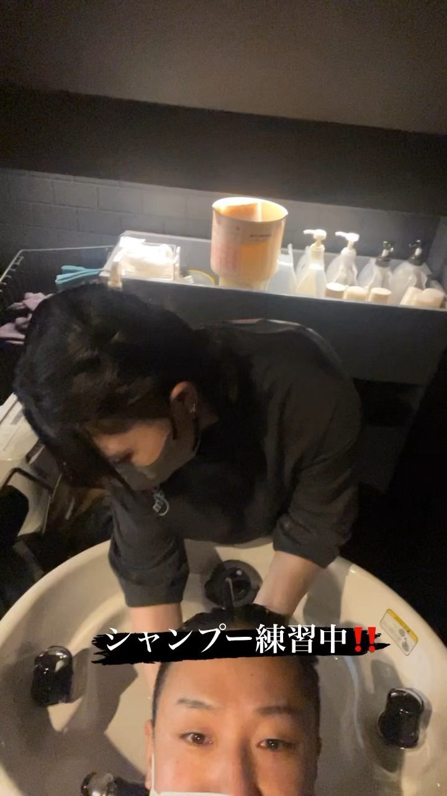
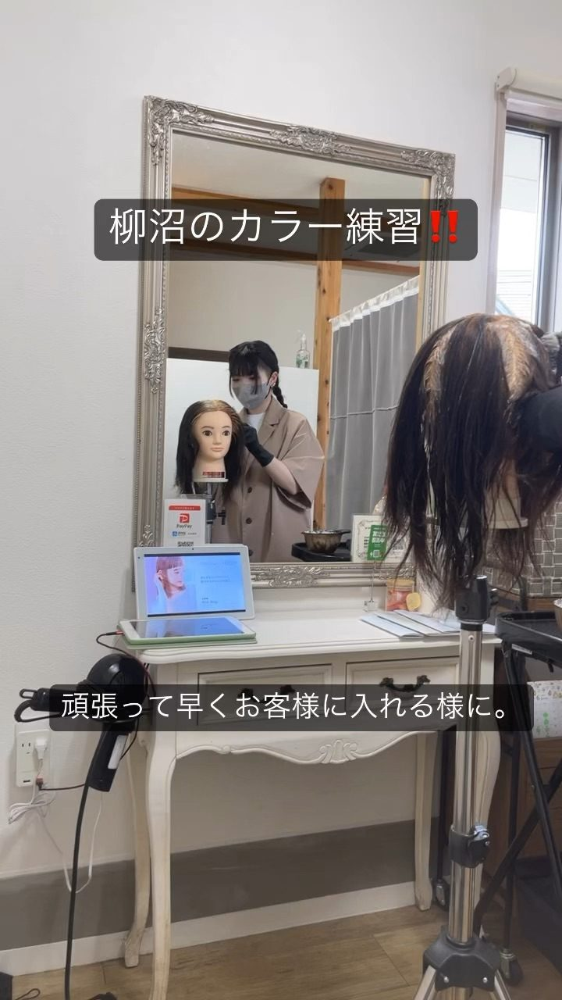

春の出会い
おはようございます。
アトリエ•ナインの菅野です。
4月になりましたね!
春は出会いの時期。
ナインも新しいスタッフが仲間になってくれました。

岡部店に配属になりました
柳沼です。
まだ3月まで美容学生で、4月から新社会人。
フレッシュなメンバーが仲間になってくれました。
新卒は定期的に入ってくれる事に感謝です。


ガンガン練習頑張って、早くお客様に入れる様にバッチリおみせでバックアップ。
今年は1年で入客目標。
ドンドン美容師の楽しさを伝え、体感してもらいます。
あ、、、。
この場を借りてお知らせ。
今年の4月より、だいぶ会社の形が出来上がってきて、スタッフもみんな力をつけてくれてきたので、自分は会社のマネジメントに力を入れていく為、サロンワーク、ほぼ出ません。
スタッフの育成、求人採用、集客、店舗展開に重きを置いてマネジメント業務にあたってまいりますので、大変申しわけございませんが、ご理解のほどよろしくお願い致します。。
スタッフも、だいぶスキルをつけてくれているので、僕の代わりでも充分過ぎるヘアスタイルを作ってくれますので、よろしくお願い致します。
それではまた。
株式会社 アトリエ・ナイン 代表 菅野
2015年9月、福島県福島市に《hair atelier nine》をオープン。
福島市で髪質改善、ヘッドスパサロンを展開しており、２０１９年１０月には待望の２店舗目をオープン。
年内に3店舗目を検討中。
オープンしてから３年目に法人化。オープン７年目に突入。サロンの労働環境改善のため社員の週休２日を実現。サロンワーク８時間で残業なし。スタッフに働きやす環境整備をもっとうに経営を心がけております。
福島市の美容室の求人をお探しの美容師さんぜひお話だけでもいかがでしょうか？？
求人に少しでも興味のある方はお気軽にお問い合わせください。
サロン見学や求人の概要の問合せ、相談など、なんでもお待ちしております。
LINE：@jnp9523c
までお問い合わせください